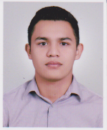

¡Hola, Soy Thomas!

Por: Thomas Pamal
Fecha: Martes 17 de Agosto 2021
Me dedico al desarrollo de software y a ayudar a nuevos programadores en sus nuevos proyectos.
He creado este blog para compartir información útil y de calidad.
Me he esforzado en desarrollar software de mejor calidad posible de manera para que les
ayude realmente.
Ver Contacto
Vision de Proyectos

Por: Thomas Pamal
Fecha: Martes 17 de Agosto 2021
Este pagina web se creo para aportar cosas positivas a mis compañeros y al mundo de la programacion de
una manera innovadora, poniendo en practica todos mis valores de crecer y aprender de la vida dia a dia,
para ser ejemplo de futuras generaciones y asi contribuyendo al desarrollo de las personas que lo
necesiten continuamente. Hay que realizar las actividades con esfuerzo y dedicacion, Exponer las
entrevistas con el maximo grado de perfeccion posible.
Ver Contacto
Mision de Proyecto
Por: Thomas Pamal
Fecha: Martes 17 de Agosto 2021
Para mi vida personal la mision es formarme como una persona etica con un si numero de valores que tambien
pueda usar en mi vida personal. La idea es prepararme y adquirir todo tipo de conocimientos para lo que
quiero ser y lo que quiero lograr. Quiero destacarme desde un principio por mis meritos y por mis esfuerzos
ademas de la que pienso que la mision de todo ser humano es dar lo mejor de si sin atropellar a los demas
si no por el contrario beneficiar en si para mi mi mision basica es mejorar con el dia a dia.
Ver Contacto